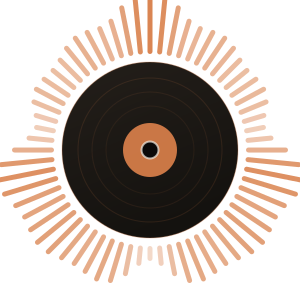

<!doctype html>
<meta charset="utf-8">
<title>screen layer · the evidence, in the right third</title>
<link rel="stylesheet" href="../lib/scene.css">
<style>
  /* THE RIGHT THIRD, AND WHY THESE NUMBERS.
   *
   * He sits centred in this take — the pipeline README's assumption that a
   * presenter tends to sit camera-left is wrong for this footage, and placing a
   * panel by that rule would put it across his face. Measured off frames at 8s,
   * 22s, 45s, 90s and 140s, his head and shoulders occupy roughly x 620-1250 at
   * the tightest framing, so the panel starts at 1260 and the animations get
   * everything left of 660.
   *
   * The bottom edge stops at 810 because the burned subtitles sit at MarginV 74
   * in a 52px face, which puts two lines of caption above y≈880.
   */
  #wrap { position: absolute; inset: 0; }

  .panel {
    position: absolute;
    left: 1260px; width: 628px;
    border-radius: 12px;
    overflow: hidden;
    opacity: 0;
    /* A hairline in the house copper, a dark bed so it separates from a patterned
       wall, and a real shadow. No fake browser chrome: the console already has its
       own header and a second one reads as a mockup. */
    border: 3px solid rgba(217,127,74,.85);
    background: #0b0a09;
    box-shadow: 0 24px 70px rgba(4,3,2,.72), 0 0 0 1px rgba(4,3,2,.55);
  }
  .panel img { display: block; width: 100%; height: auto; }

  /* The terminal. 17px on a 58-column budget is what fits 628px of panel, and
     capture_sql.py refuses to record a statement wider than that — so nothing here
     ever wraps a SQL keyword, which reads as a typo to anyone who knows SQL. */
  .term {
    font-family: var(--face);
    font-size: 17px;
    line-height: 1.42;
    padding: 15px 17px 17px;
    color: var(--ink);
    white-space: pre;
    tab-size: 2;
  }
  .term .sql   { color: var(--phosphor-bright); }
  .term .out   { color: var(--ink); opacity: .93; }
  .term .note  { color: var(--faint); font-style: italic; }
  .term .rule  { color: var(--faint); opacity: .5; }
  /* Purple is reserved for the two things nothing else can do. AS OF SYSTEM TIME
     is one of them, so the replay panel — and only it — lights its clause. */
  .term .crdb  { color: var(--crdb-bright); font-weight: 600; }

  /* The stack plate. Two columns rather than one list, because the two questions a
     judge is actually holding — "which AWS services" and "which CockroachDB
     features" — are separate questions and a single column makes them scan as one. */
  .plate { display: flex; gap: 20px; white-space: normal; }
  .plate .col { flex: 1 1 0; min-width: 0; }
  .plate .colh {
    color: var(--crdb-bright);
    font-weight: 600;
    letter-spacing: .10em;
    text-transform: uppercase;
    font-size: 15px;
    padding-bottom: 6px;
    margin-bottom: 6px;
    border-bottom: 2px solid rgba(217,127,74,.45);
  }
  /* The AWS column is copper; only CockroachDB gets the reserved purple, and it gets
     it here because this plate is the one place the two are named side by side. */
  .plate .col:nth-child(2) .colh { color: var(--phosphor-bright); }
  .plate .row { font-size: 15px; line-height: 1.5; color: var(--ink); opacity: .95; }

  /* Sized in em, not px: the terminal shrinks per panel to fit its widest returned
     row, and a fixed-pixel caret would drift off the baseline when it does. */
  .caret {
    display: inline-block;
    width: .6em; height: 1em;
    background: var(--phosphor-bright);
    vertical-align: -0.16em;
  }

  /* THE END CARD. Full frame, not in the right third — it plays over appended black
     after the take has ended, so there is nothing to sit beside. */
  .card {
    position: absolute;
    inset: 0;
    display: flex;
    flex-direction: column;
    align-items: center;
    justify-content: center;
    gap: 34px;
    font-family: var(--face);
    opacity: 0;
  }
  .card .mark { width: 190px; height: 190px; }
  .card .word {
    font-size: 76px;
    font-weight: 600;
    letter-spacing: .06em;
    color: var(--ink);
  }
  .card .url {
    font-size: 31px;
    letter-spacing: .10em;
    color: var(--phosphor-bright);
  }
  .card .built {
    margin-top: 16px;
    font-size: 17px;
    letter-spacing: .22em;
    text-transform: uppercase;
    color: var(--faint);
  }
  /* The two sponsor marks, side by side on a rule. Optically matched rather than
     matched by height: the AWS lockup carries its own whitespace under the smile and
     the Cockroach Labs glyph does not, so equal box heights would read as unequal. */
  .card .sponsors {
    display: flex;
    align-items: center;
    gap: 62px;
    padding-top: 26px;
    border-top: 2px solid rgba(217,127,74,.30);
  }
  .card .sponsors img.aws { height: 62px; }
  .card .sponsors img.crdb { height: 58px; }
  .card .sponsors .crdbword {
    font-size: 30px;
    letter-spacing: .04em;
    color: var(--crdb-bright);
    font-weight: 600;
  }
  .card .crdblock { display: flex; align-items: center; gap: 16px; }

  .cap {
    position: absolute;
    left: 1260px;
    font-family: var(--face);
    font-size: 22px;
    letter-spacing: .13em;
    text-transform: uppercase;
    color: var(--phosphor-bright);
    paint-order: stroke fill;
    -webkit-text-stroke: 5px rgba(6,5,4,.62);
    opacity: 0;
  }
</style>
<svg id="svg" viewBox="0 0 1920 1080" style="position:absolute"><g id="stage"></g></svg>
<div id="wrap"></div>
<script src="../lib/defs.js"></script>
<script src="../lib/scene.js"></script>
<script src="../out/screen/proofs.js"></script>
<script src="../out/screen/cues.js"></script>
<script>
/* SCREEN LAYER — the evidence, drawn where a judge can read it.
 *
 * The thirteen abstract scenes explain what the system is. This shows it being
 * true. For a hackathon submission the second job is the one that gets marked, and
 * a diagram cannot do it: a judge has to watch the database answer.
 *
 * Everything drawn here came off the live cluster or the deployed site.
 * `capture_sql.py` executed each statement against production and recorded what
 * came back; `capture_app.py` screenshotted the running console. Nothing is a
 * mockup and nothing is retyped — if a claim stops holding, the capture fails and
 * this layer draws the failure rather than the claim.
 *
 * TIMES ARE ABSOLUTE. compose.py hands this layer the whole timeline, so seek(t)
 * here is the video's own clock, unlike the scenes which are stretched onto the
 * paragraphs they belong to.
 *
 * ## The typing is not decoration
 *
 * A static screenshot of a result proves that a result exists. Watching the
 * statement land and the rows arrive after it is what distinguishes "we ran this"
 * from "we wrote this down", which is the whole difference the judging guidance is
 * asking about when it says to show memory in action rather than narrate it.
 *
 * The clock is still a pure function of t — no CSS animation, no rAF — for the same
 * reason everything else here is: a frame has to be reproducible or re-rendering
 * one panel jitters against a take already in the timeline.
 */
const { win, ease, clamp01, lerp } = SP;

const FADE = (window.CUES && window.CUES.fade) || 0.40;

const PROOFS = {};
((window.PROOFS && window.PROOFS.proofs) || []).forEach(p => { PROOFS[p.slug] = p; });

const CUES = (window.CUES && window.CUES.cues) || [];

/* Derived from the cue sheet, never typed. `Scene.define` clamps `seek(t)` to DUR,
 * so a DUR shorter than the last cue silently freezes this layer at its old ending —
 * which is exactly what happened when the end card was added past the 161.2s take:
 * every frame of the card rendered as the second-to-last frame of the previous cut,
 * with the closing screenshot still up. */
const DUR = Math.max(161.2, ...CUES.map(c => c[1])) + 1.0;

/* A panel is centred on CENTRE and then clamped, rather than hung off the bottom.
 * Bottom-anchoring put a short panel down over the desk, which reads as a caption
 * rather than as the other half of the composition; centring it near the animation
 * column's own centre makes the frame symmetrical about him.
 *
 * BOTTOM is the hard floor: the burned subtitles sit at MarginV 74 in a 52px face,
 * so two lines of caption occupy roughly y 880-1030 and nothing may reach into it.
 *
 * Declared up here because `setup()` calls `layout()`, and a `const` further down
 * the file is still in its temporal dead zone at that point — which throws before
 * SCENE_READY is ever set, and a scene that never signals ready is indistinguishable
 * from a hung render. */
const CENTRE = 465, BOTTOM = 830, TOP_MIN = 96;

/* Panel is 628 wide with 17px of padding each side; INNER is what type can occupy.
 * IBM Plex Mono advances at 0.6em, so a line of N characters needs N * 0.6 * size. */
const INNER = 628 - 34;

/* A proof is a sequence of (statement, output). Give each step a share of the
 * window proportional to how much there is to read in it, so a three-line result
 * does not get the same dwell as a one-line one. */
function schedule(proof, start, end) {
    const span = Math.max(end - start, 0.1);
    const weights = proof.steps.map(s =>
        1.2 + s.sql.split("\n").length * 0.55 + s.out.split("\n").length * 0.75);
    const total = weights.reduce((a, b) => a + b, 0);
    let at = start;
    return proof.steps.map((s, i) => {
        const d = span * (weights[i] / total);
        const row = { step: s, start: at, end: at + d,
                      // The statement types over the first third of its slot and the
                      // rows land just after. An earlier cut typed to 45% and
                      // revealed at 62%, which left a four-row result on screen for
                      // 2.6 seconds — the typing is only the evidence that this is
                      // live, the result is the thing being shown, and it was the
                      // half getting squeezed.
                      type: at + d * 0.32, show: at + d * 0.42 };
        at += d;
        return row;
    });
}

function esc(s) {
    return s.replace(/&/g, "&amp;").replace(/</g, "&lt;").replace(/>/g, "&gt;");
}

/* AS OF SYSTEM TIME is the one clause the film says nothing else can do, so it is
 * the one clause that gets the reserved purple. */
function markSql(s) {
    return esc(s).replace(/(AS OF SYSTEM TIME)/g,
                          '<span class="crdb">$1</span>');
}

let items = [];

SP.Scene.define({
    dur: DUR,

    setup() {
        GROOVES.setAttribute("opacity", 0);
        const wrap = document.getElementById("wrap");

        CUES.forEach(([s, e, kind, ref, caption]) => {
            if (kind === "card") {
                const card = document.createElement("div");
                card.className = "card";
                card.innerHTML =
                    '' +
                    '<div class="word">Spindle</div>' +
                    '<div class="url">spindle.mattrickslauer.com</div>' +
                    '<div class="sponsors">' +
                      '<div class="crdblock">' +
                        '' +
                        '<span class="crdbword">CockroachDB</span>' +
                      '</div>' +
                      '' +
                    '</div>' +
                    '<div class="built">Built for the CockroachDB &times; AWS ' +
                    'Hackathon &mdash; Agentic Memory</div>';
                wrap.appendChild(card);
                items.push({ s, e, kind, ref, panel: card, cap: card, card: true });
                return;
            }

            const panel = document.createElement("div");
            panel.className = "panel";
            const cap = document.createElement("div");
            cap.className = "cap";
            cap.textContent = caption;
            wrap.appendChild(panel);
            wrap.appendChild(cap);

            const it = { s, e, kind, ref, panel, cap };

            if (kind === "shot") {
                const im = document.createElement("img");
                // A missing screenshot must not render as a broken-image box on a
                // judge's screen. Mark it dead and let frame() keep it invisible.
                im.onerror = () => { it.dead = true; };
                im.src = "../out/app/" + ref;
                panel.appendChild(im);
                // Images are laid out by their own aspect; pin the caption above
                // whatever height the panel settles at, once it has one.
                it.img = im;
            } else if (kind === "stack") {
                const p = (window.CUES && window.CUES.plates || {})[ref];
                const box = document.createElement("div");
                box.className = "term plate";
                if (!p) {
                    box.innerHTML = '<span class="note">missing plate: ' + esc(ref) +
                                    "</span>";
                } else {
                    const cols = Object.keys(p);
                    const rows = Math.max(...cols.map(c => p[c].length));
                    const out = [];
                    cols.forEach(c => {
                        out.push('<div class="col"><div class="colh">' + esc(c) +
                                 "</div>");
                        for (let i = 0; i < rows; i++) {
                            out.push('<div class="row">' +
                                     (p[c][i] ? esc(p[c][i]) : "&nbsp;") + "</div>");
                        }
                        out.push("</div>");
                    });
                    box.innerHTML = out.join("");
                }
                panel.appendChild(box);
            } else {
                const proof = PROOFS[ref];
                if (!proof) {
                    // Loud rather than silent: a missing proof means a claim in the
                    // voiceover has nothing behind it, and a blank right third would
                    // look like a design choice.
                    panel.innerHTML =
                        '<div class="term"><span class="note">missing proof: ' +
                        esc(ref) + ' — run capture_sql.py</span></div>';
                    it.missing = true;
                } else {
                    const term = document.createElement("div");
                    term.className = "term";
                    // Fit the WIDEST line this panel will ever hold, counting the
                    // returned rows and not just the statement. capture_sql.py caps
                    // the SQL at 58 columns but it cannot cap what the database
                    // answers — `search` comes back 70 columns wide and `replay` 62,
                    // and at a fixed 17px both ran off the right edge of the panel
                    // in a finished render. Shrinking to fit keeps every row on one
                    // line, which for tabular output matters more than type size.
                    const widest = Math.max(...proof.steps.flatMap(st =>
                        [st.sql, st.out, st.note ? "-- " + st.note : ""]
                            .join("\n").split("\n").map(l => l.length)));
                    const fs = Math.max(12.5, Math.min(17, INNER / (0.601 * widest)));
                    term.style.fontSize = fs.toFixed(2) + "px";
                    panel.appendChild(term);
                    it.term = term;
                    it.rows = schedule(proof, s, e);
                }
            }
            items.push(it);
        });

        // Park every panel at its final height so the first frame it appears on is
        // already the right size — a panel that grows as it types would drag the
        // caption around with it.
        items.forEach(it => { if (it.term) renderTerm(it, 1e9); });
        // The end card holds still. A settle looks like an accident on a static
        // plate that is the last thing anyone sees.
        items.forEach(it => { if (it.card) it.panel.style.transform = "none"; });
        layout();
    },

    frame(t) {
        items.forEach(it => {
            if (it.dead) { it.panel.style.opacity = 0; it.cap.style.opacity = 0; return; }
            const a = clamp01(Math.min(
                ease.out(win(t, it.s - FADE, FADE)),
                1 - ease.in(win(t, it.e, FADE))));
            it.panel.style.opacity = a;
            it.cap.style.opacity = a;
            if (a <= 0 || it.card) return;
            // a small settle on the way in, so it lands rather than appears
            const k = lerp(0.975, 1, ease.out(win(t, it.s - FADE, 0.75)));
            it.panel.style.transform = `scale(${k.toFixed(4)})`;
            if (it.term) renderTerm(it, t);
        });
        layout();
    },
});

function renderTerm(it, t) {
    const html = [];
    it.rows.forEach((r, i) => {
        if (t < r.start) return;
        const s = r.step;
        // how much of the statement has been typed
        const p = clamp01((t - r.start) / Math.max(r.type - r.start, 0.001));
        const full = s.sql;
        const shown = p >= 1 ? full : full.slice(0, Math.floor(full.length * p));
        if (i > 0) html.push('<span class="rule">\n</span>');
        html.push('<span class="sql">' + markSql(shown) + "</span>");
        if (p < 1) { html.push('<span class="caret"></span>'); return; }
        if (s.note && t >= r.show) {
            html.push('\n<span class="note">-- ' + esc(s.note) + "</span>");
        }
        if (s.out && t >= r.show) {
            html.push('\n<span class="out">' + esc(s.out) + "</span>");
        }
    });
    it.term.innerHTML = html.join("");
}

/* Vertical placement, re-run every frame because an image may only just have
 * decoded and changed the panel's height. */
function layout() {
    items.forEach(it => {
        if (it.card) return;              // full frame; it places itself
        const h = it.panel.offsetHeight || 300;
        let top = CENTRE - h / 2;
        if (top + h > BOTTOM) top = BOTTOM - h;   // never into the subtitles
        top = Math.max(TOP_MIN, top);
        it.panel.style.top = top + "px";
        it.cap.style.top = (top - 34) + "px";
    });
}
</script>
